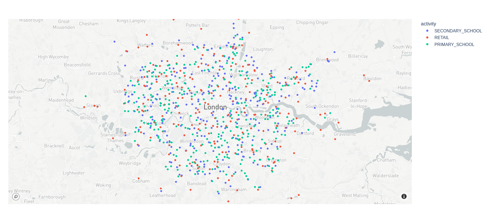

6 How to use the output file
Once you download or generate an SPC output file for your study area, how do you use it? Each study area consists of one .pb or protocol buffer file. This file efficiently encodes data following this schema. Read more about what data is contained in the output.
You can read the “protobuf” (shorthand for a protocol buffer file) in any supported language, and then extract and transform just the parts of the data you want for your model.
We have examples for Python below, but feel free to request other languages.
6.1 Javascript
We have a web app using Svelte to interactively explore SPC data. Its source code is great reference for how to use the proto output.
6.2 Python
To work with SPC outputs in Python, we recommend using the SPC toolkit.
6.2.1 Install
The package can be installed with pip from git with:
pip install 'git+https://github.com/alan-turing-institute/uatk-spc.git#subdirectory=python'or with Poetry:
poetry add 'git+https://github.com/alan-turing-institute/uatk-spc.git#subdirectory=python'To include extra dependencies dev and examples for running tests and example notebooks:
pip install 'uatk-spc[dev,examples] @ git+https://github.com/alan-turing-institute/uatk-spc.git#subdirectory=python'or with Poetry:
poetry add 'git+https://github.com/alan-turing-institute/uatk-spc.git#subdirectory=python'6.2.2 Reading and Building
The two classes provided by the toolkit are a Reader (reads all population fields: people, households, venues_per_activity, time_use_diaries and info_per_msoa) and a Builder (extends the Reader to include methods for combining the fields on top a people dataframe to build a single final dataframe).
An example of using the Reader is shown below:
# Import package
from uatk_spc import Reader
# Pick a region with SPC output saved
(region, path) = "rutland", "data/output/England/2020/"
# Read from parquet and JSON
population = Reader(path, region, backend="polars")
# Or directly from a filepath to a gzip archive
population = Reader(
filepath="https://ramp0storage.blob.core.windows.net/test-spc-output/test_region.tar.gz",
backend="polars"
)
# Write people to csv
population.people.to_pandas().to_csv("people.csv", index=False)And an example of using the Builder:
# Import Builder
from uatk_spc import Builder
(region, path) = "rutland", "../data/output/England/2020/"
# Build population from people and households and unnest "health" and "details"
population = (
Builder(path, region, backend="polars")
.add_households()
.unnest(["health", "details"])
.build()
)
# Write combined people and household dataframe to csv
population.to_pandas().to_csv("people_and_households.csv", index=False)For further examples of using the Reader and Builder to analyse SPC outputs, see the examples folder.
6.2.3 Converting .pb file to JSON format
To interactively explore the data, viewing JSON is much easier. It shows the same structure as the protobuf, but in a human-readable text format. The example below uses a small Python script:
# Download a file
wget https://ramp0storage.blob.core.windows.net/spc-output/v2.1/England/2020/rutland.pb.gz
# Uncompress
gunzip rutland.pb.gz
# Convert the .pb to JSON
# - without poetry
python python/uatk_spc/scripts.py --input-path data/output/England/2020/rutland.pb > rutland.json
# - with poetry
cd python && poetry run spc_to_json --input-path ../data/output/England/2020/rutland.pb > rutland.json
# View the output
less rutland.json6.2.4 Converting to numpy arrays
The ASPICS project simulates the spread of COVID through a population. The code uses numpy, and this script converts the protobuf to a bunch of different numpy arrays.
Note the ASPICS code doesn’t keep using the generated Python protobuf classes for the rest of the pipeline. Data frames and numpy arrays may be more familiar and appropriate. The protobuf is a format optimized for reading and writing; you don’t need to use it throughout all of your model code.
6.2.5 Visualizing venues
Use this script to read a protobuf file, then draws a dot for every venue, color-coded by activity.
